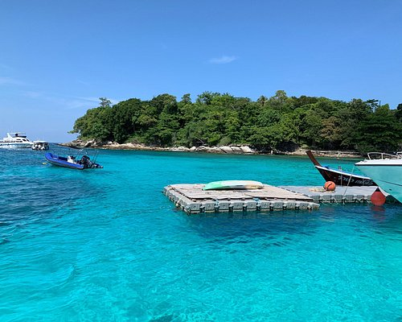

Banana Beach is a beautiful tropical spot known for its soft golden sand, crystal-clear waters, and lush green surroundings. It offers a peaceful atmosphere, perfect for swimming, sunbathing, and enjoying water sports. The beach is often lined with small cafes and shacks serving fresh seafood and tropical drinks, making it a favorite getaway for relaxation and fun.
Banana Beach.
Europe • Alps • Aug 3, 2025
